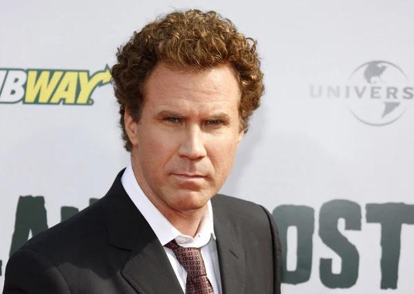
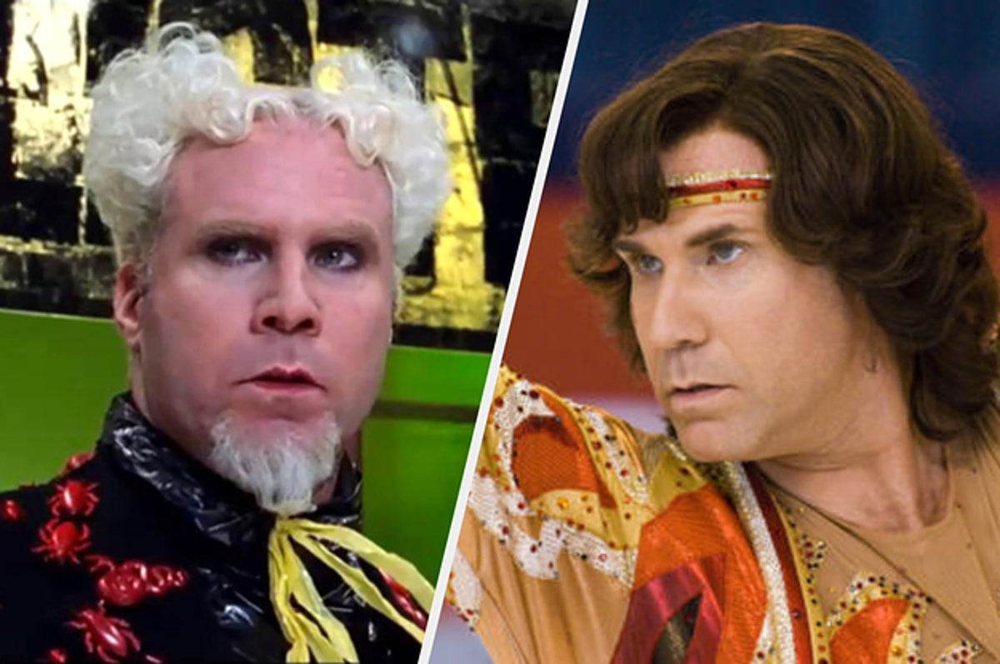
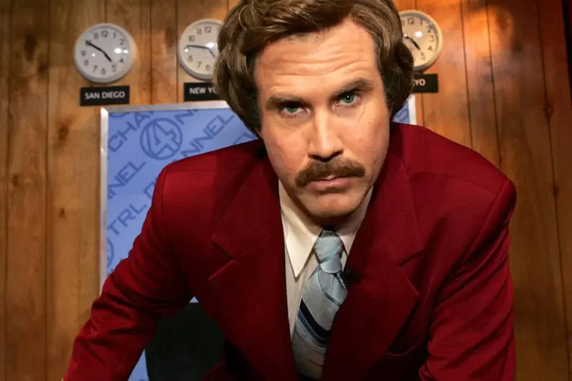
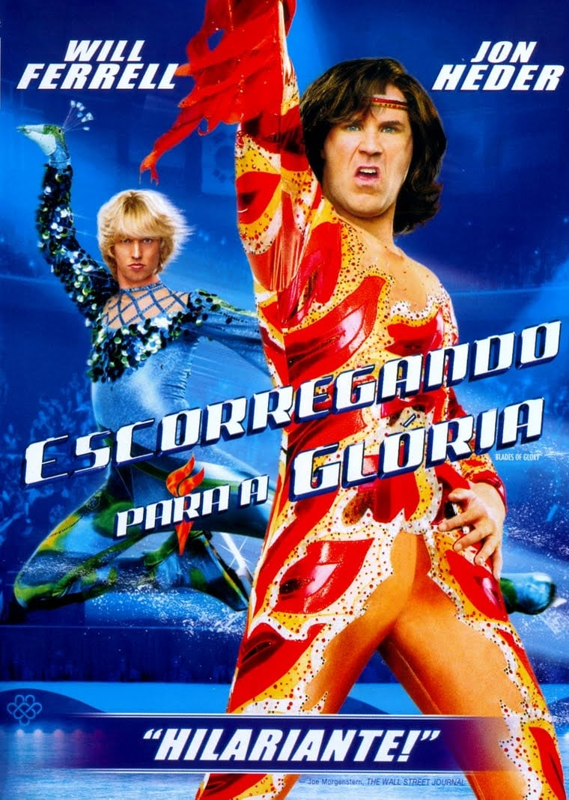

Ganhou 4 Primetime Emmys 17 vitórias e 97 indicações no total
Melhor Filme
Anchorman: O famoso apresentador Ron Burgundy acolhe a novata repórter Veronica Corningstone ao mundo do telejornalismo dos anos 90, dominado pelos homens. A jovem começa a ofuscar Ron e ele provoca sua ruína ao vivo. Mas uma matéria envolvendo o zoológico de San Diego é a chance para Ron se redimir.
Fotos



Conhecido por

O Âncora: A Lenda de Ron Burgundy
Ron Burgundy
2004

Escorregando Para a Glória
Chazz Michael Michaels
2006